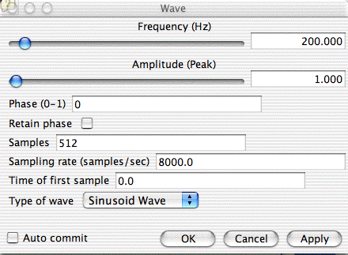

The user can choose from several different wave styles: Sinusoidal
wave, Saw tooth, Triangular wave, Square wave or an Impulse waveform.
An
impulse is a single non-zero data value, surrounded by zero values. The
sampling rate, frequency, amplitude, phase, acquisition time, and length
of the waveform can all be chosen from the user interface window, shown
here:

The frequency of the wave (in Hz) is the number of wave cycles per second in the data. For the Impulse wave, this is the number of impulses per second. The frequency can be changed by using the scrollbar at the top of the window or by editing the text field just below it. The minimum and maximum range for the scrollbar can be set using the two text fields in the middle of the window. If the frequency is set to zero, the unit will output a constant data set for most kinds of waveforms (the value depending on the style of the waveform and the phase), but for the Impulse waveform the effect is to create one impulse per data set, at a location determined by the value of the phase.
The amplitude is the peak amplitude. All waves oscillate between positive and negative values of this amplitude except the Impulse waveform, which always has this height. If the user sets the amplitude to zero, all output data values will be zero. In this case the unit ignores all the other parameters except the number of samples, the sampling rate, and the time of the first sample. This can be useful for generating a "blank sheet" to which other effects are added by other units. The amplitude can also be set to a negative value. For most waveforms this will be equivalent to a shift of phase by 0.5, but for the Impulse waveform it will produce impulses with negative amplitudes.
The phase is the location within the waveform at which the waveform starts. It is given as a fraction of a full cycle, so it should be specified in a range of 0 to 1, running from the beginning to the end of the waveform. For the Sinusoidal wave, a phase of 0 is a standard sine function, a phase of 0.25 generates a standard cosine. Other waveforms (except Impulse) have their zero of phase defined so that they look as similar to the sine wave as possible. Thus, for a triangular wave, the waveform with an initial phase of zero rises from zero to 1 at a phase of 0.25, then descends linearly to -1 at a phase of 0.75, then rises again to zero at phase 1. For the Impulse waveform, the phase determines where within one period the impulse actually occurs.
By clicking on the Retain Phase check box, the relative phase between successive outputs from the unit is maintained. This means that the waveforms in successive output sets will fit together as a continuous wave. The phase display is updated to show the actual phase of the first point of the waveform most recently output by the unit.
The number of samples that the SampleSet has can be changed using the "Samples" field. This is the length of the output data set.
The sampling rate is changed using the "Sampling Rate" field.
This is the number of samples per second that the output set contains.
Note that the duration of the data is the number of samples divided by the sampling rate. The number of cycles of the waveform in the data set is the duration times the frequency.
The time of the first sample is the time that will be written
into the acquistion time of the output SampleSet. If "retain phase" is
checked, then this time will be incremented for each successive output
data set by the duration of the previous one. The display of this time
is updated to show the actual time of the first point of the waveform most
recently output by the unit.